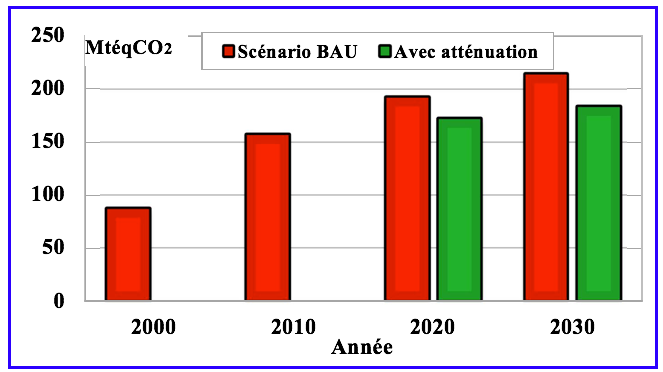
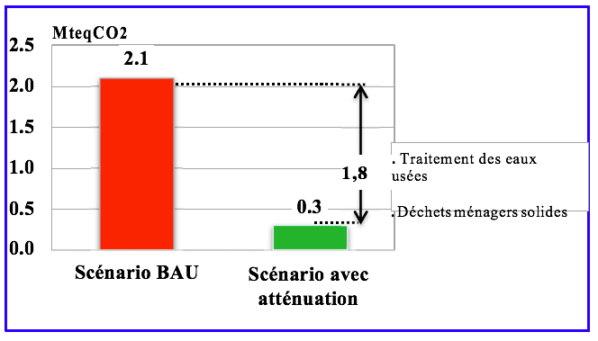
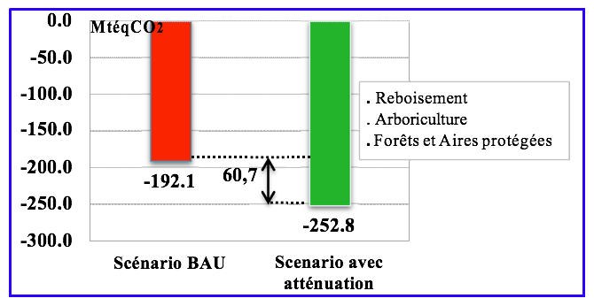

Étant un pays insulaire, Madagascar fait partie des 10 pays disposant de zones côtières parmi les plus importantes au monde. De par sa position géographique, il est toutefois exposé à des risques climatiques récurrents qui affectent son économie, ainsi que les conditions de vie de la population. Cela est en lien avec les conséquences des changements climatiques qui se font ressentir notamment depuis ces 20 dernières années : (1) allongement des périodes de sècheresse ; (2) variabilité du régime pluviométrique ; (3) intensification des cyclones ; (4) inondations associées aux perturbations cycloniques.
Madagascar est tout aussi concerné par l’atténuation que par l’adaptation, bien que les portées de ces deux approches complémentaires soient différentes. D’une part, le choix des secteurs de l’adaptation adoptés par le pays (agriculture, gestion des zones côtières, santé), ainsi que l’approche d’adaptation basée sur les écosystèmes (forêts, mangroves, biodiversité, ressources en eau) peuvent avoir des bénéfices significatifs sur l’atténuation. En effet, ces actions peuvent contribuer à l’augmentation et à la conservation des stocks de carbone. La gestion durable des forêts et des mangroves, ainsi que les efforts de réduction des émissions associées à la déforestation peuvent particulièrement illustrer ce lien.
Madagascar est un pays peu industrialisé, avec des émissions marginales. La place du secteur primaire, notamment l’agriculture et la pêche, est prépondérante dans l’économie nationale. De plus, avec 11,9% d’aires protégées (soit 7 millions d’hectares) par rapport à son territoire national), le pays a une biodiversité mondiale unique à préserver. Enfin, le pays est encore peu électrifié : seulement 20% des ménages bénéficient de l’éclairage électrique, ce qui explique sa dépendance au bois comme source énergétique, qui va encore perdurer au moins à moyen terme.
La CPDN de la République de Madagascar a été préparée en tenant compte des objectifs et priorités nationaux de développement inclus dans les principaux documents stratégiques nationaux, notamment la Politique Général de l’Etat (PGE), de la Politique Nationale de Développement (PND) et de la Politique Nationale de Lutte contre les changements climatiques (PNLCC).
La contribution nationale de Madagascar est la résultante des mesures d’atténuation pour tous les secteurs, comparée au scénario de référence national BAU (« business as usual » ; voir Figure 1). A l’horizon 2030, Madagascar vise une réduction de l’ordre de 30 MtéqCO2 de ses émissions de GES, soit 14% par rapport au scénario BAU, projections établies sur la base de l’inventaire de GES de l’année 2000 à l’année 2010. A cette réduction s’ajoute l’augmentation des absorptions du secteur UTCATF qui sont de l’ordre de 61 MtéqCO2 en 2030. Ceci représente une augmentation de la capacité de puits de Madagascar de 32% par rapport au scénario BAU. Ces objectifs restent conditionnés aux supports financiers qui seront reçues de la part des partenaires mondiaux (contributions conditionnelles). Madagascar compte sur le support de la communauté internationale pour atteindre cet objectif à travers les mécanismes financiers de la Convention Cadre des Nations Unies sur les changements climatiques (CCNUCC) et les autres mécanismes de financement existants ou futurs. L’estimation des coûts d’atténuation se chiffre à plus de 6 milliards de dollars US (USD) (voir Tableau 2).
Si rien n’est fait, les émissions de Madagascar évolueront d’environ 87 MtéqCO2 en l’an 2000 pour atteindre 214 MtéqCO2 en 2030. Les absorptions baisseront de 290 MtéqCO2 en 2000 à 192 MtéqCO2 en 2030 qui fera sortir le pays de son statut de puits de 203 MtéqCO2 en 2000 pour devenir un émetteur de 22 MtéqCO2 en 2030. Le profil des émissions et des absorptions est présenté dans le Tableau 1.
Tableau 1 : Profil des émissions et des absorptions pendant la période 2000 à 2030 (en Mtéq.C02).
|
Année |
2000 |
2010 |
2020 |
2030 |
|
Emissions |
87,152 |
156,973 |
192,281 |
214,206 |
|
Absorptions |
-290,017 |
-220,094 |
-215,890 |
-192,111 |
|
Emission/Absorptions Nettes |
-202,865 |
-63,121 |
-23,609 |
22,095 |
Particulièrement pour le secteur UTCATF, Madagascar est en train de développer un programme de reforestation mixte. La présente CPDN propose l’accroissement des superficies sous couvert forestier avec un programme de reforestation en essences autochtones de 270 000 ha. Ces efforts cadreront parfaitement avec les ambitions de la croissance économique projetée, en incluant une production énergétique à partir des sources renouvelables et en utilisant aussi les dernières technologies pour l’électrification rurale.
Figure 1 : Potentiel de réduction et d’absorption de gaz à effet de serre en 2030 par rapport au scénario « business as usual ».
Les actions identifiées par l’Etat Malgache pour atteindre son objectif de réduction des émissions de GES sont les suivantes :
La contribution concernera l’ensemble des secteurs de l’économie. La portée géographique est de 100% du territoire national.
Les figures 2, 3, 4, 5, 6, 7 et 8 figurant dans l’Annexe correspondent aux émissions et absorptions nationales et sectorielles.
L’approche « scénario de référence » est adoptée, étant donné que Madagascar n’a pas l’obligation de réduire ses émissions par rapport à une année donnée, ceci vis-à-vis de ses engagements envers la CCNUCC. Cette approche reflète mieux les objectifs du pays et est plus transparente. Tout en étant réaliste, elle se place dans la politique stratégique de développement du pays. Elle rejoint aussi les besoins internationaux sur l’apport potentiel du pays pour contribuer à l’atteinte de l’objectif ultime de la CCNUCC sur la stabilisation du niveau des gaz à effet de serre (GES) dans l’atmosphère.
Les émissions couvertes dans cette CPDN couvrent 99,9% des émissions de GES nationales. Leur utilisation étant négligeable, les gaz fluorés ne sont pas pris en compte.
La méthode utilisée pour l’estimation des émissions et des absorptions est basée sur la ligne directrice révisée du GIEC de 1996, appuyée par les Guides de Bonnes Pratiques 2000 et 2003.
Les émissions pour le scénario BAU et les scénarios d’atténuation ont été estimées à partir des données de l’Institut des Statistiques de Madagascar et des directions responsables des catégories émettrices de GES, ainsi que d’analyses démographiques, économiques et sociales. Les émissions évitées ou absorbées selon les mesures ou actions priorisées ont été ensuite agrégées pour arriver au potentiel d’atténuation du pays. L’approche concernant le secteur UTCATF consiste au suivi du changement d’affectation des terres à travers des techniques de télédétection, appuyés par la cartographie classique et autres moyens pour suivre les variables déterminantes responsables des émissions et absorptions.
Valeurs des potentiels de réchauffement global sur cent ans, tirées du deuxième rapport d’évaluation du GIEC :
La CPDN a été développée en utilisant un processus de consultation itérative multipartite, en engageant toutes les parties prenantes concernées. Le processus CPDN a impliqué plusieurs réunions bilatérales et deux séries de consultations nationales. Il a mis en évidence des synergies avec les documents cadres nationaux (PGE, PND 2015-2019, PNLCC) ; ainsi qu’avec d’autres processus connexes de la CCNUCC, y compris la Troisième Communication Nationale (TNC), les « Biennal Update Reports », le Programme d’Action National d’Adaptation aux changements climatiques (PANA), les Actions Nationales d’Atténuations Appropriées (ANAA) et l’évaluation des besoins technologiques (TNA). Le processus CPDN était coordonné par le Bureau National de Coordination des Changements Climatiques (BNCCC).
La mise en œuvre générale, le suivi et l’évaluation de la CPDN seront cadrés par les documents stratégiques existants ou encore à élaborer (notamment le Plan National d’Adaptation ; avec une vision d’insérer la dimension Changements Climatiques à tous les niveaux et dans tous les secteurs concernés). Ils privilégieront le processus participatif et inclusif de tous les acteurs impliqués, avec un leadership fort du Ministère de l’Environnement, de l’Ecologie, de la Mer et des Forêts, qui est en charge de la coordination des actions de lutte contre les changements climatiques. L’approche intégrée sera utilisée pour mettre en évidence la complémentarité des actions et moyens en vue d’enregistrer de meilleurs résultats.
La CPDN de Madagascar constituera un document de référence pour la mise en œuvre de mesures d’adaptations aux effets des changements climatiques et pour les actions reflétant sa contribution dans la réduction et absorption des émissions de GES. Elle décrit ainsi les lignes de la politique climatique du pays, et démontre clairement les ambitions du pays à apporter sa contribution à l’élan mondial en vue de la COP 21 où un nouvel accord ambitieux et équitable doit être adopté.
Madagascar fait partie des pays les moins avancés. Le PIB est de 440 USD/habitant, en dessous de la moyenne des pays pauvres subsahariens. Environ 91% des ménages sont classés pauvres sur la base de 2 dollars par jour, avec un indice de pauvreté de 36,1. Les émissions nationales de GES représentent 0,2% des émissions mondiales en 2000, et Madagascar est un pays non émetteur. En effet, Madagascar a été un puits net de 13 téqCO2/habitant en 2000, et de 3 tonnes en 2010.
Malgré sa très faible responsabilité en termes d’émission de GES, l’ambition du pays est de réduire ses émissions de GES de l’ordre de 30 MtéqCO2 à l’horizon 2030 par rapport au scénario de référence « Business as Usual » et augmenter les absorptions du secteur UTCAF autour de 61 MtéqCO2. Cet apport combiné atteindra 91 MtéqCO2 de GES ainsi évités. Dans ce contexte, la contribution de la République de Madagascar est considérée comme équitable et ambitieuse.
Ainsi, dans cet ensemble, la présente CPDN se veut de contribuer à l’atteinte d’une vision de développement dans un contexte social, économique et environnemental résilient aux changements climatiques, garantissant à long terme la sécurité alimentaire et l’amélioration du bien-être de la population, ainsi que de la durabilité des fonctions écosystémiques des ressources et habitats naturels, par la réduction des pressions et la prévention contre les exploitations irraisonnées et répétitives du capital naturel du pays.
Pas de réduction à partir d’achats de crédits carbone hors Madagascar.
L’approche adoptée pour l’identification des actions d’adaptation s’est concentrée sur les secteurs ou domaines estimés comme les plus vulnérables aux impacts des changements climatiques. Bien que sectorielles, ces grandes actions et les impacts qui en découleront sont toutefois de portée nationale. Ces grandes actions s’articulent notamment autour des impacts des aléas climatiques qui touchent le plus le Pays, à savoir les cyclones et inondations, la sécheresse et la montée du niveau de la mer, et dont les intensités sont aggravées par la hausse de la température observée tant au niveau national que mondial. La considération de l’adaptation dans la CPDN s’intègre dans la logique de la Politique Nationale de Lutte contre les changements climatiques élaborée en 2010 dont le premier axe stratégique concerne le « renforcement des actions d’adaptation aux changements climatiques tenant compte des besoins réels du pays ».
La modélisation climatique réalisée en 2008 indique que la tendance au réchauffement des températures qui s’observe depuis les années 1950 depuis le Sud de Madagascar et qui remonte progressivement vers le Nord depuis les années 1970, a propension à se poursuivre. Les projections d’ici 2055, incluant la période de la présente CPDN, maintiennent cette tendance à la hausse, même si c’est d’une manière non uniforme : par exemple, elle serait plus importante dans le Sud, et relativement plus faible dans les régions côtières.
Quant aux précipitations, toujours au même horizon, elles connaîtraient une hausse dans la majeure partie du pays alors que dans l’Est, dans l’extrême Sud-est et dans le Sud-est, des diminutions seraient observées, en fonction de certaines périodes de l’année. Enfin, concernant les cyclones, pour les dizaines d’années à venir, leur fréquence resterait invariable, tandis que le nombre des cyclones intenses augmenterait ; de l’autre côté, de plus en plus de cyclones se déplaceraient vers le Nord.
D’où les tendances actuelles et projetées :
Il est à signaler toutefois que des incertitudes demeurent encore sur les paramètres des changements climatiques à Madagascar. Ces incertitudes concernent notamment les changements de l’amplitude et la direction des précipitations, qui sont pourtant des variables météorologiques importantes. D’où l’importance de la poursuite des recherches, études et analyses approfondies y afférentes, aux fins de détermination de scénarios climatiques fiables.
|
Volet |
Coût (milliards USD) |
|
Adaptation |
28,713 |
|
Atténuation |
6,370 |
|
Renforcement de capacités |
1,754 |
|
Transfert de technologies et recherches |
5,262 |
|
TOTAL |
42,099 |
République de Madagascar. 2015. CPDN : ANNEXE.

Figure 2 : Emissions de gaz à effets de serre au niveau national, tout secteur confondu.

Figure 3 : Absorptions de gaz à effets de serre au niveau national pour le secteur Utilisation des Terres et Changement d’Affectation des terres et Foresterie (UTCATF).

Figure 4 : Scénarii d’émissions (en MtéqCO2) du secteur Energie à l’horizon de l’année 2030. En légende : les sous-secteurs les plus concernés pour les actions d’atténuation.

Figure 5 : Scénarii d’émissions (en MtéqCO2) du secteur Déchet à l’horizon de l’année 2030. En légende : les sous-secteurs les plus concernés par les actions d’atténuation.

Figure 6 : Scénarii d’émissions (en MtéqCO2) du secteur Agriculture à l’horizon de l’année 2030. En légende : les sous-secteurs les plus concernés par les actions d’atténuation.

Figure 7 : Scénarii d’émissions (en MtéqCO2) du secteur UTCAF à l’horizon de l’année 2030. En légende : les sous-secteurs les plus concernés par les actions d’atténuation.

Figure 8 : Scénarii d’absorptions (en MtéqCO2) du secteur UTCAF à l’horizon de l’année 2030. En légende : les sous-secteurs les plus conc